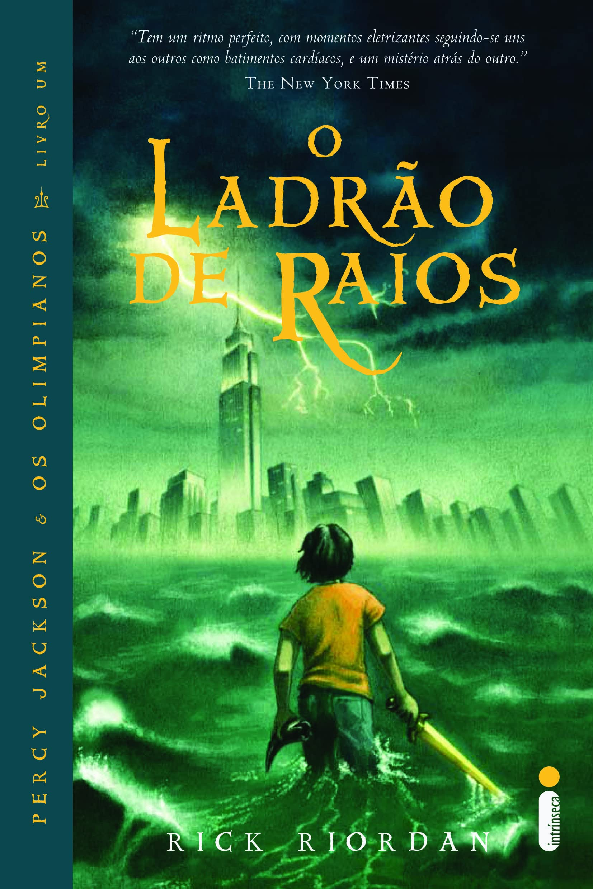
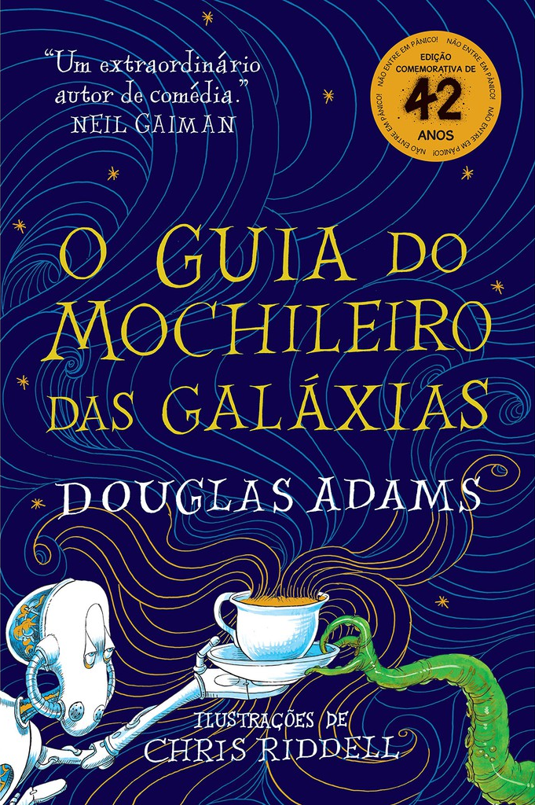
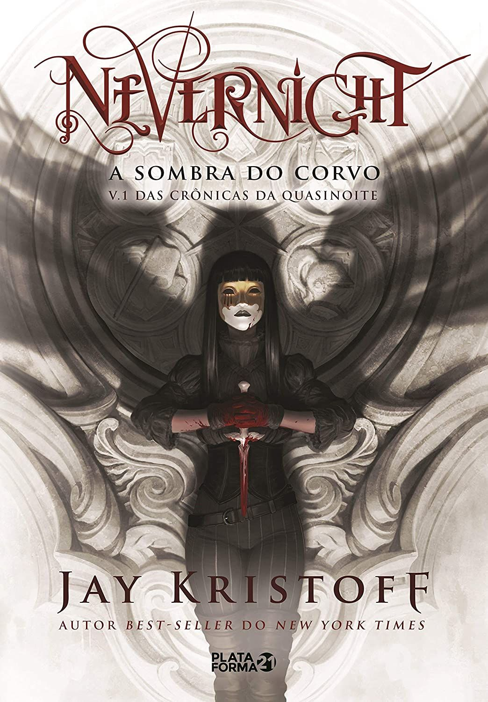
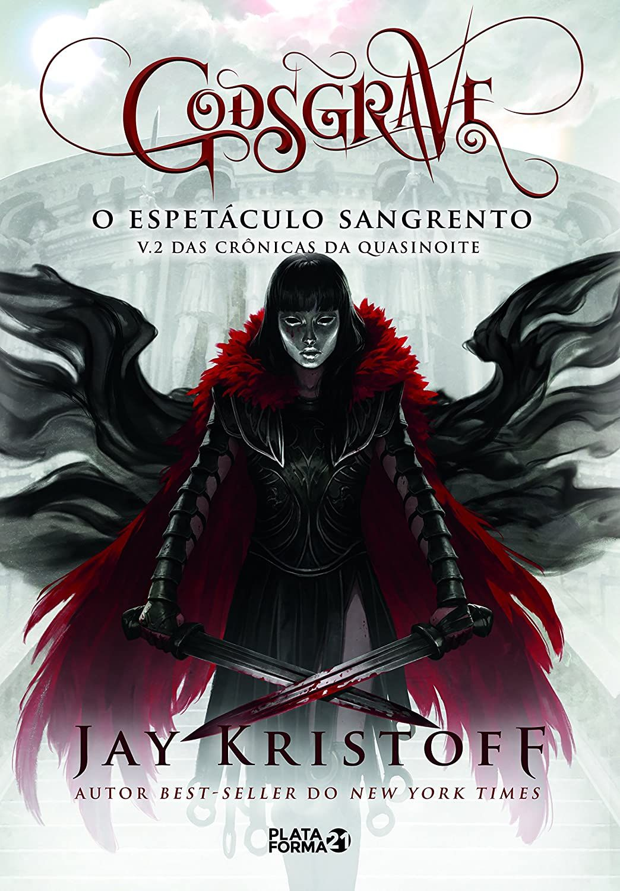
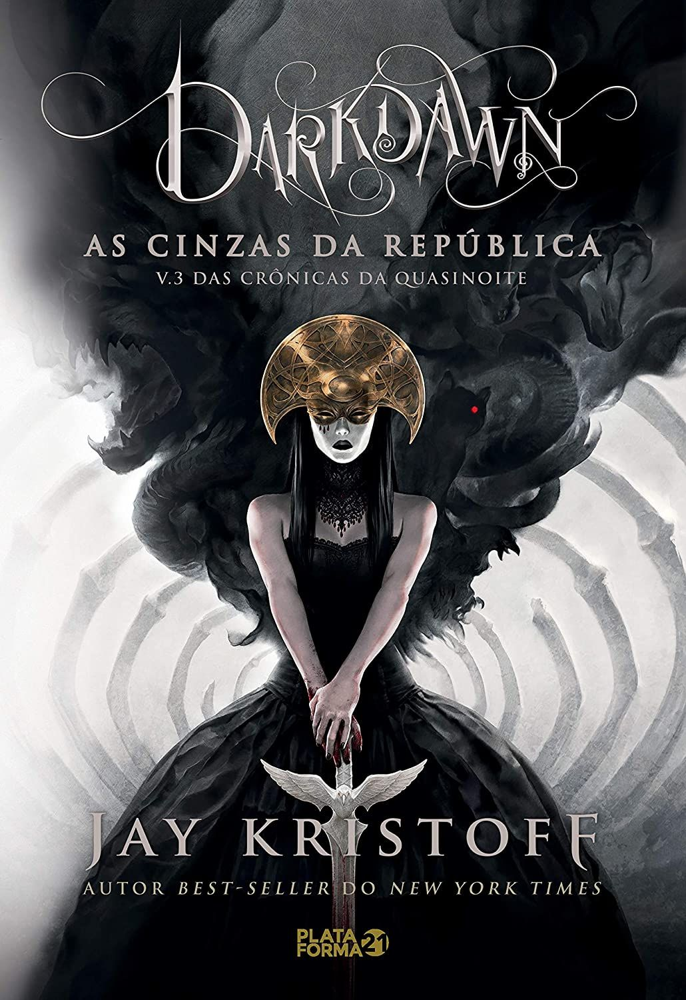

Estante de livros
Sua biblioteca à um clique de distância!
Harry Potter e a Pedra Filosofal

Sinopse
Harry Potter vive com os tios Dursley, onde é mal tratado até completar seus 11 anos.
É com essa idade que o jovem bruxo começa a receber cartas da escola de Hogwarts.
Na noite de seu aniversário Harry é visitado por Hagrid (um ser gigante que trabalha para o diretor de Hogwarts),
o qual revela que Harry é filho de bruxos e foi convidado a ingressar na escola de bruxaria.
A verdade é toda revelada a Harry Potter, que seus pais foram mortos pelo terrível bruxo Voldemort
e que a sua cicatriz era marca da tentativa de assassinato que Harry sofrera.
Harry em seu primeiro ano “escolar” na escola de bruxaria é apresentado
a Ronald Wesley e Hermione Granger (seus futuros melhores amigos)
que passaram por várias aventuras juntos.
Fonte: Google
| Data da primeira publicação |
Autor |
Idioma original |
Gênero(s) |
| 26 de Junho de 1997 |
J. K. Rowling |
Inglês |
Aventura, Fantasia, Literatura Fantástica |
Senhor dos Anéis: A Sociedade do Anel

Sinopse
Numa cidadezinha indolente do Condado, um jovem hobbit é encarregado de uma imensa tarefa.
Deve empreender uma perigosa viagem através da Terra-média até as Fendas da Perdição, e lá destruir o Anel do Poder
- a única coisa que impede o domínio maléfico do Senhor do Escuro.
Fonte: Google
| Data da primeira publicação |
Autor(a) |
Idioma original |
Gênero(s) |
| 29 de Julho de 1954 |
J. R. R. Tolkien |
Inglês |
Fantasia, Literatura Fantástica |
Percy Jackson e o Ladrão de Raios

Sinopse
A vida do adolescente Percy Jackson, que está sempre pronto
para entrar em uma confusão, torna-se bem mais complicada quando ele
descobre que é filho do deus grego Poseidon. Em um campo de treinamento
para filhos das divindades, Percy aprende a tirar proveito de seus
poderes divinos e se preparea para a maior aventura de sua vida.
Fonte: Google
| Data da primeira publicação |
Autor(a) |
Idioma original |
Gênero(s) |
| 28 de Junho de 2005 |
Rick Riordan |
Inglês |
Fantasia, Aventura |
Alice no País das Maravilhas

Sinopse
Ainda garotinha, Alice Kingsleigh visitou um lugar mágico
pela primeira vez e não tinha mais lembranças sobre o local a
não ser em seus sonhos. Em uma festa da nobreza, a jovem vê um coelho branco.
Alice o segue e cai em um buraco, indo parar em um mundo estranho: o País das Maravilhas.
Lá, ela reencontra personagens que estavam guardados em sua memória através dos sonhos.
Fonte: Google
| Data da primeira publicação |
Autor(a) |
Idioma original |
Gênero(s) |
| 4 de Julho de 1865 |
Lewis Carroll |
Inglês |
Infantil |
O Guia do Mochileiro das Galáxias

Sinopse
Arthur Dent é um homem normal, que está tendo um péssimo dia.
Após saber que sua casa está prestes a ser demolida, ele descobre que
Ford Prefect, seu melhor amigo, é um extraterrestre. Para completar,
fica sabendo que a Terra está perto de ser destruída. Sem saída,
Arthur pega carona em uma nave espacial que está de passagem. Ele passa
então a conhecer o universo, sendo que tudo o que precisa saber sobre sua
nova vida está contido em um valioso livro: o Guia do Mochileiro das Galáxias.
Fonte: Google
| Data da primeira publicação |
Autor(a) |
Idioma original |
Gênero(s) |
| 12 de Outubro de 1979 |
Douglas Adams |
Inglês |
Ficção Científica |
Nevernight: A Sombra do Corvo

Sinopse
Há histórias sobre Mia Corvere, nem todas verdadeiras. Alguns a chamam de Moça Branca.
Ou a Faz-Rei. Ou o Corvo. A matadora de matadores.
Mas, uma coisa é certa, você deveria temê-la. Quando ela era criança, Darius Corvere – seu pai –
foi acusado de insurreição contra a República de Itreya.
Mia estava presente quando o carrasco puxou a alavanca, viu o rosto do pai se
arroxeando e seus pés dançando à procura do chão, enquanto os cidadãos de Godsgrave
gritavam “traidor, traidor, traidor”... No mesmo dia, viu a mãe e o irmão caçula serem presos em
nome de Aa, o Deus da Luz. E, embora os três sóis daquela terra não permitam
que anoiteça por completo, uma escuridão digna de trevas tomou conta da menina. As sombras nunca mais a largaram.
Mia, agora com dezesseis anos, não se esqueceu daqueles que destruíram sua família. Deseja tirar a vida de todos eles.
É por isso que ela quer se tornar uma serva da Igreja Vermelha – o mais mortal rebanho de assassinos de toda a República.
O treinamento será árduo. Os professores não terão misericórdia. Não há espaço para amor ou amizade. Seus colegas e as provas poderão matá-la.
Mas, se sobreviver até a iniciação, se for escolhida por
Nossa Senhora do Bendito Assassinato... O maior massacre do qual se terá notícia poderá acontecer. Mia vai se vingar.
Fonte: Google
| Data da primeira publicação |
Autor(a) |
Idioma original |
Gênero(s) |
| 2016 |
Jay Kristoff |
Inglês |
Literatura fantástica, Alta fantasia, Steampunk |
Godsgrave: O Espetáculo Sangrento

Sinopse
A assassina Mia Corvere conquistou seu lugar nas
Lâminas da Nossa Senhora do Bendito Assassinato, mas há aqueles que
não a reconhecem como merecedora. Exercendo seu sangrento oficio
nos confins da República, ela ainda está longe de executar sua vingança.
Fonte: Google
| Data da primeira publicação |
Autor(a) |
Idioma original |
Gênero(s) |
| 5 de Setembro de 2017 |
Jay Kristoff |
Inglês |
Literatura fantástica, Alta fantasia, Steampunk |
Darkdawn: As Cinzas da República

Sinopse
Os soldados luminatii e os servos da Igreja Vermelha estão à sua caça.
Mercurio foi capturado e Mia deve salvá-lo antes que seu querido mentor
pereça dentro dos muros da escola de assassinos. Entre sua fuga e o resgate
do velho, ela precisa conquistar a confiança de Jonnen, seu irmão.
Fonte: Google
| Data da primeira publicação |
Autor(a) |
Idioma original |
Gênero(s) |
| 3 de Setembro de 2019 |
Jay Kristoff |
Inglês |
Literatura fantástica, Alta fantasia, Steampunk |